Slack & Tableau Integration
Connecting Tableau Server with Slack can transform the way you and your team work, making it easier to share information and collaborate directly within Slack.
Some of the benefits of this integration include:
• Setup Alerts: Monitor KPIs directly in Slack.
• Real-Time Collaboration: Share insights for instant discussion.
• Faster Decision-Making: Access critical data without even opening Tableau Server.
To configure the integration between Tableau Server and Slack, you must have administrator permissions on both platforms.
Before starting this tutorial, it is important to remember that connecting Tableau Server to Slack requires creating a Slack application first. It may seem complicated, but by following the step-by-step instructions below, you will see that it is quite simple.
How to Create a Slack App
1. Go to the Slack API documentation, click Create New App, and select the From Scratch option.
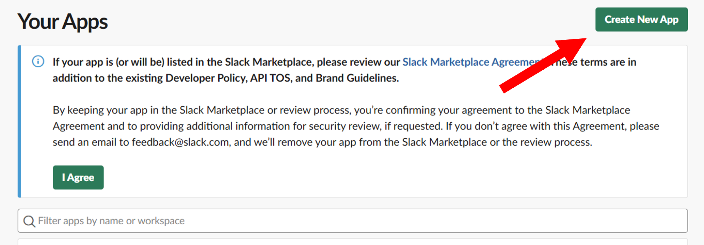
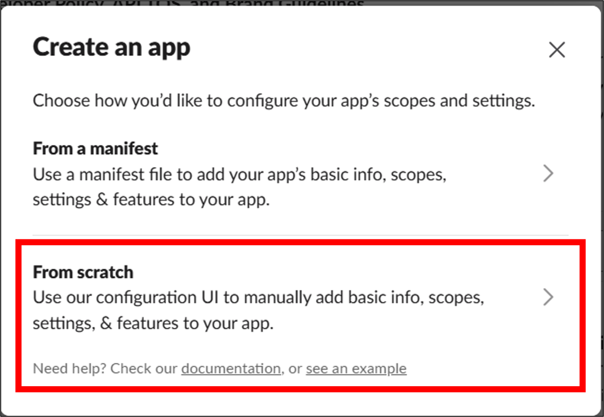
2. Choose a name for the app, select a workspace, and click Create App.
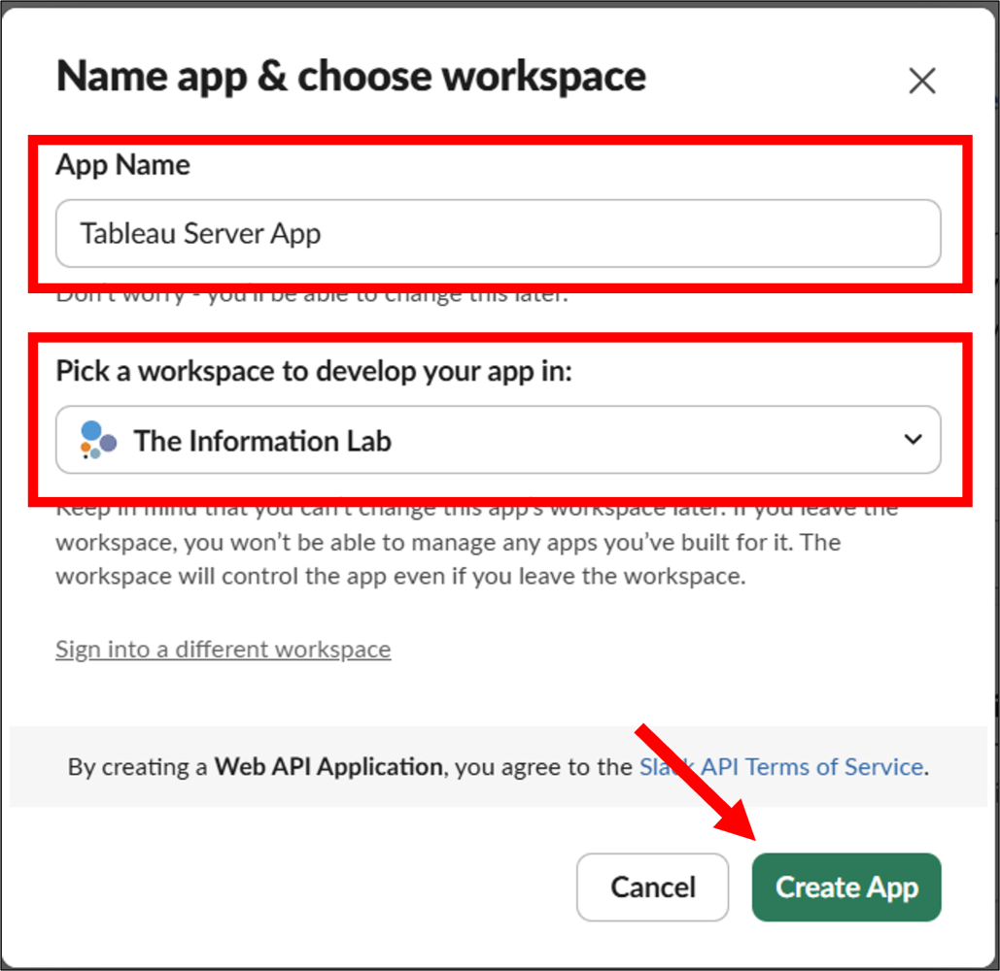
3. In the side menu, go to App Home and click Review Scopes to Add.
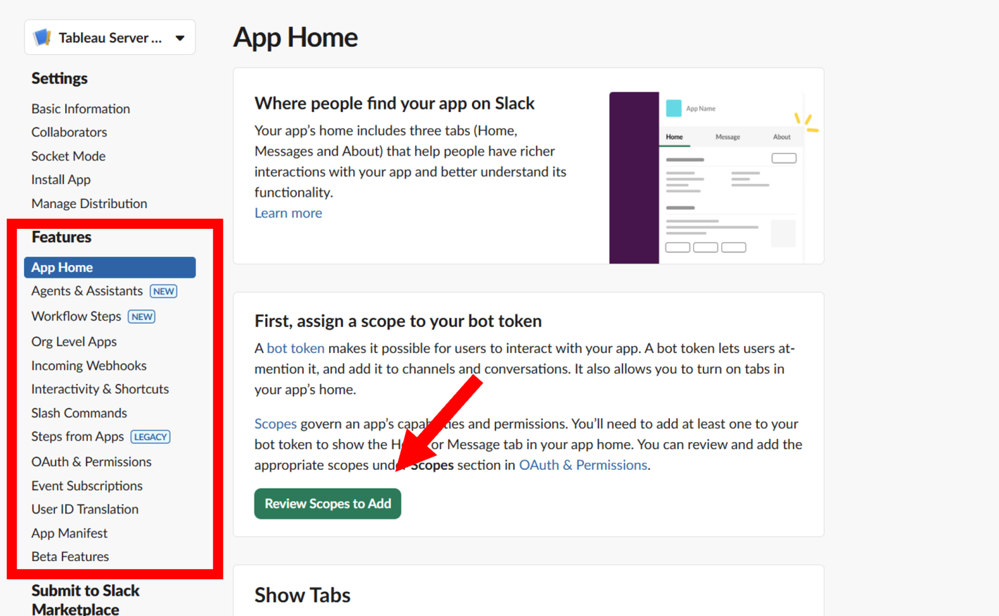
4. Scroll down to the Scopes section and, under Bot Token Scopes, click Add an OAuth Scope. Then select the following permissions:
• chat:write
• files:write
• users:read
• users:read.email
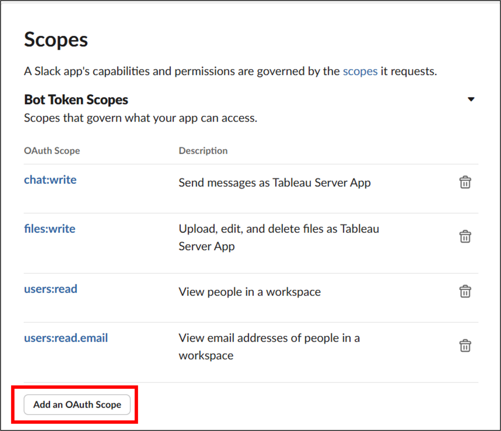
5. In the side menu, select OAuth & Permissions and scroll down to the Redirect URL section.
Click Add New Redirect URL and enter the URL of the Tableau Server you want to connect, using the following format: https://<Tableau Server URL>/auth/add_oauth_token
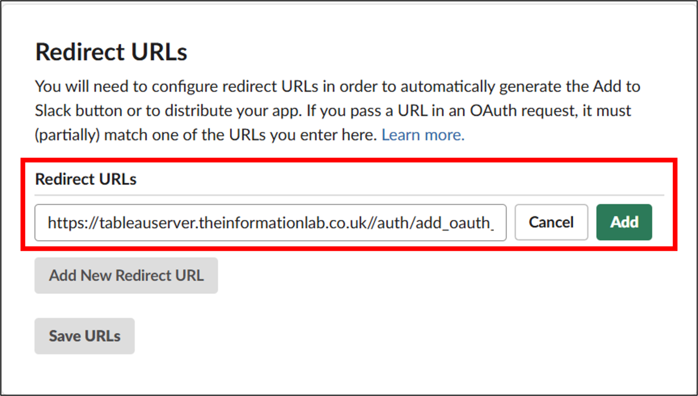
6. Select Basic Information from the side menu and copy or save the following details:
• Client ID
• Client Secret
• Redirect URL entered in the previous step
⚠️ You will need this information shortly.
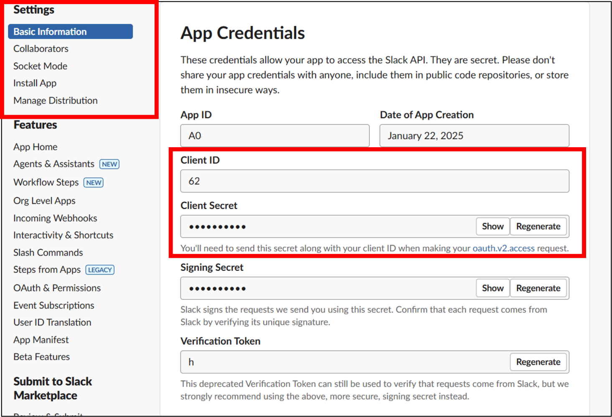
7. Click Install App and then the green Install to <Your Workspace> button.
Slack will ask for permission to allow the app to access your company workspace. If you agree, click Allow.
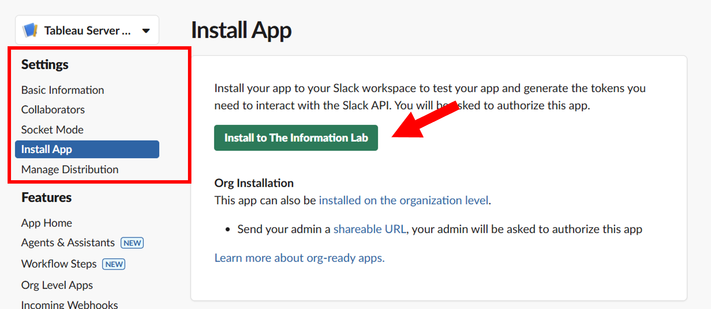
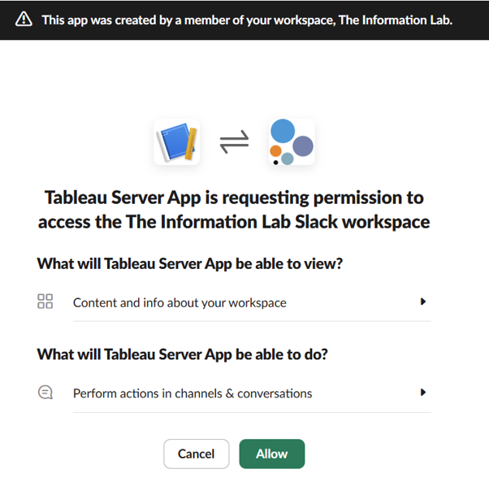
Done! You will see a message confirming that the app has been installed successfully.
Now we need to connect Tableau Server to the app we just created.
Connecting Tableau Server to Slack
1. In Tableau Server, click Settings in the side menu and then select the Integrations tab.
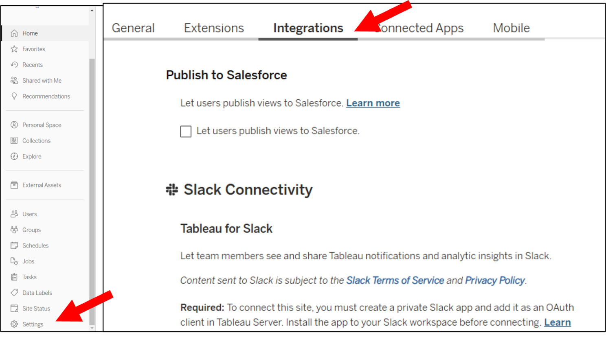
2. Under Slack Connectivity, click Add OAuth Client and enter the information you copied in step 6:
• Client ID
• Client Secret
• Redirect URL
Then click Add OAuth Client.
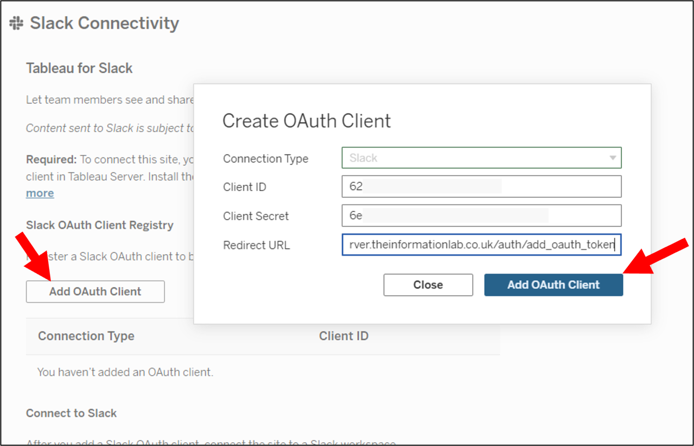
3. You will see the Connection Type and Client ID listed in the table below. Click Connect to Slack.
A new window will appear asking you to approve the permissions required to connect Tableau Server to Slack. If you agree, click Allow.
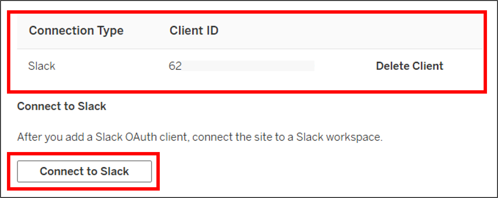
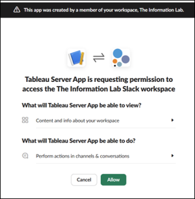
Done! Your Tableau Slack App is now created and connected to Tableau Server.
Bonus: Testing the Integration
1. Open Slack, click Add Apps, and select the app we just created (in this example, Tableau Server App).
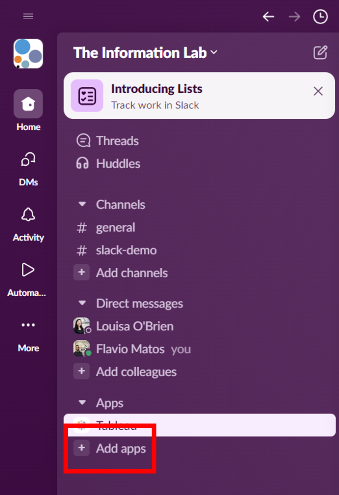
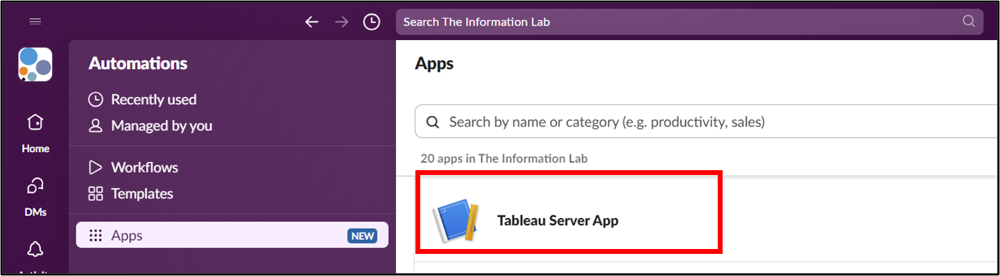
2. To test the integration, open any view in Tableau Server and click Share.
Select yourself as the recipient and add a message (optional).
⚠️ Important: The email address used in Tableau Server must be the same as the one registered in Slack.
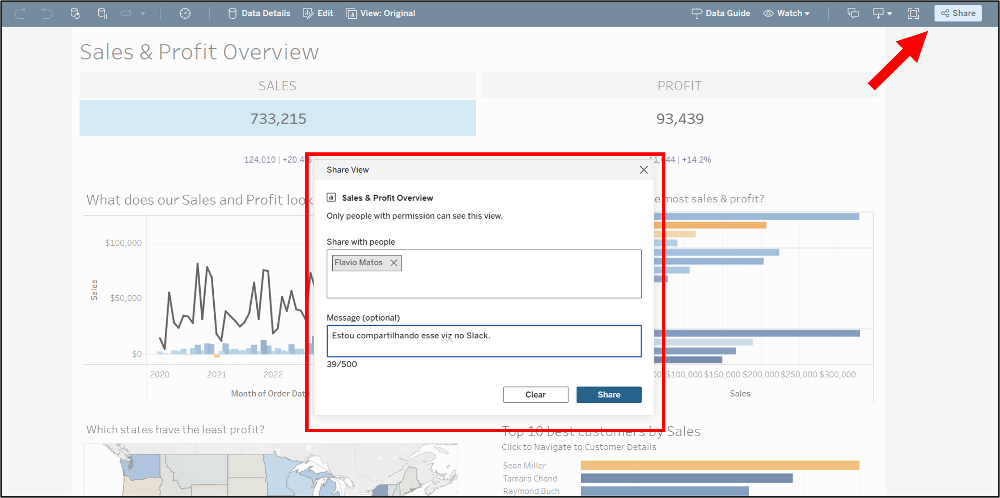
3. You will receive a Slack notification informing you that you have a message from the Tableau App.
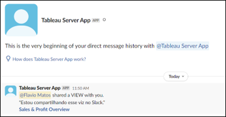
And that concludes our tutorial on how to integrate Tableau Server with Slack!
I hope you found this guide useful. Let me know in the comments if it worked for you, and if you have any questions, feel free to leave a comment!
📱Social media
You can find me on LinkedIn and Twitter
Check out my portfolio on Tableau Public